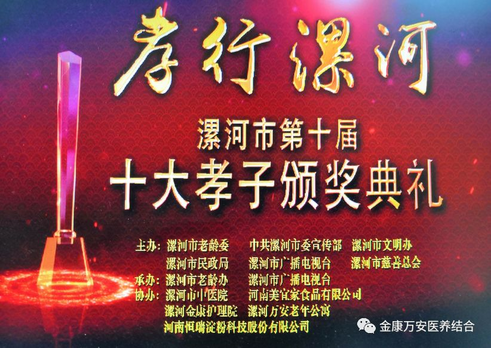
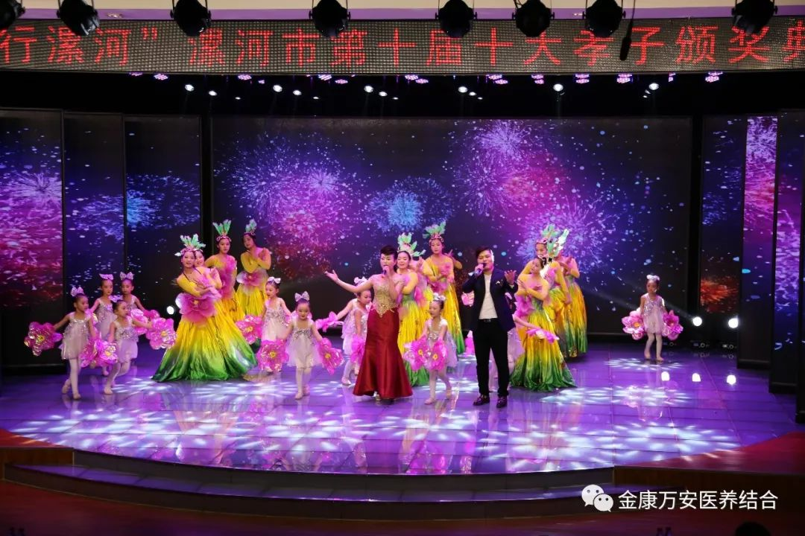
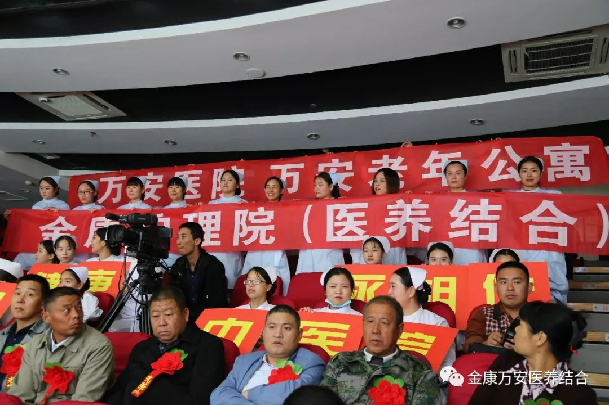
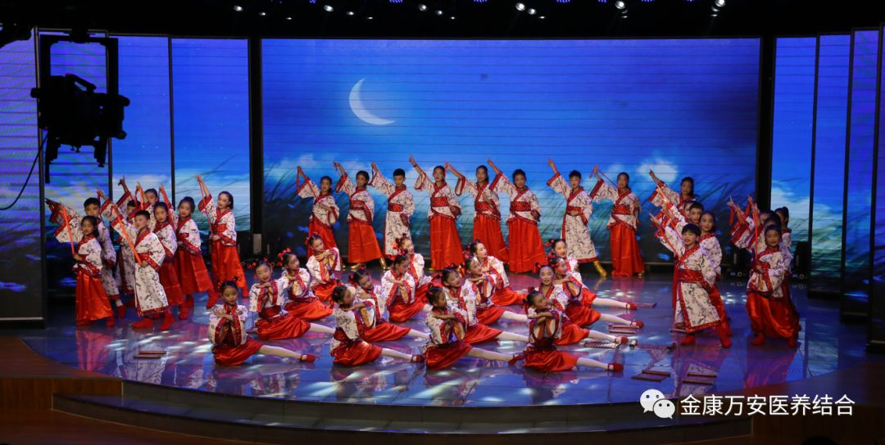
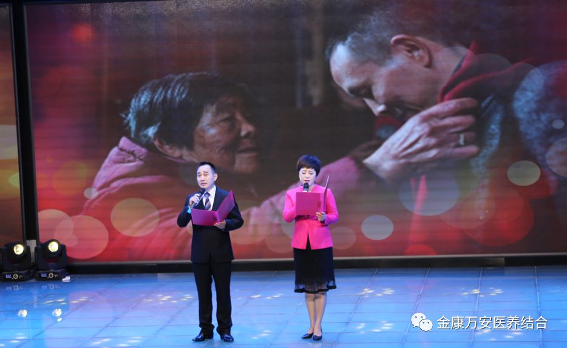
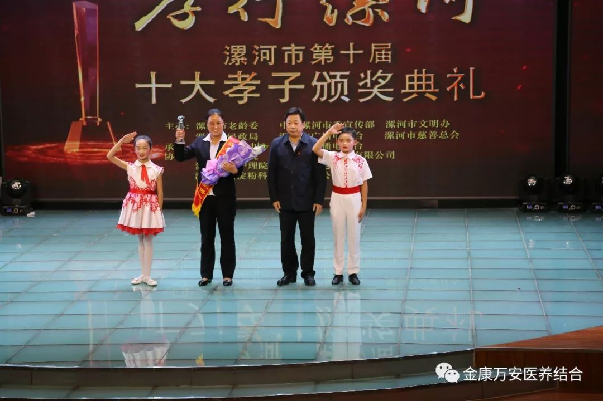
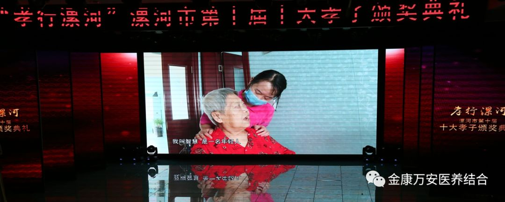
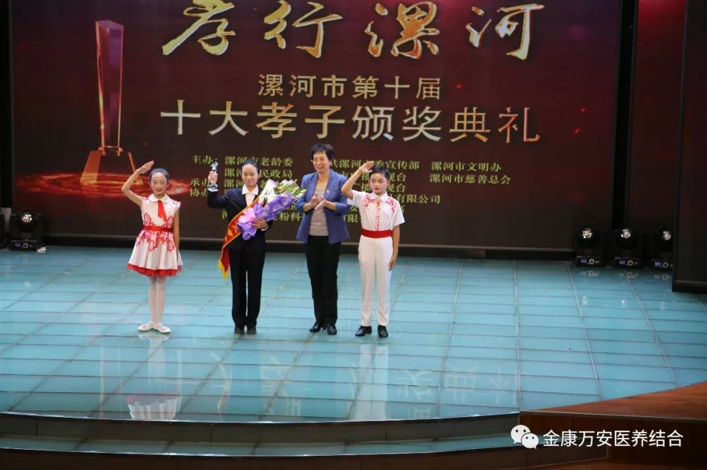
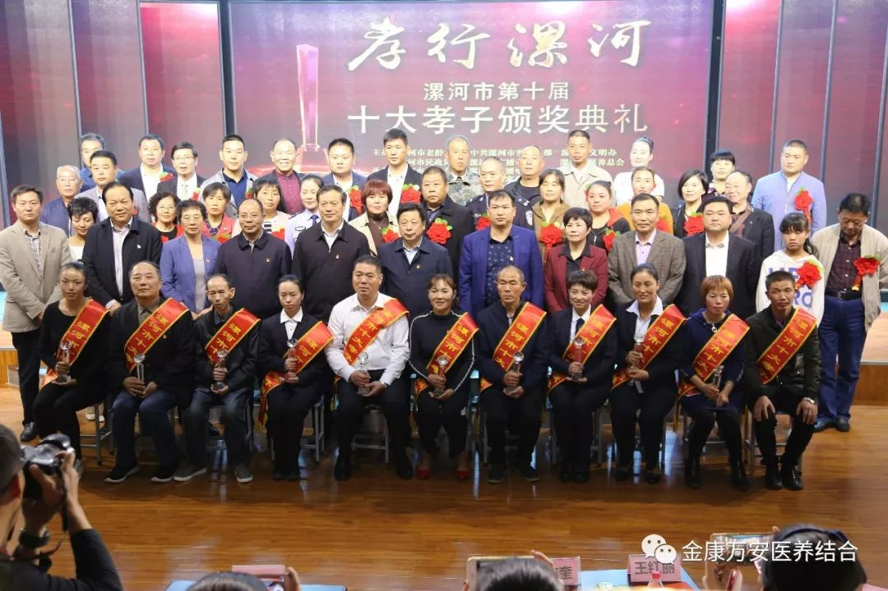

热烈祝贺漯河金康护理院、万安老年公寓李英英、智慧荣获漯河市第十届“十大孝子”称号
中华孝道，薪火传承！2018年10月17日，由漯河市老龄工作委员会、中共漯河市委宣传部、漯河市文明办、漯河市民政局、漯河市广播电视台、漯河市慈善总会主办，漯河金康护理院、漯河万安老年公寓赞助的孝行漯河“漯河市第十届十大孝子颁奖典礼”在新闻大厦演播大厅隆重举行。
  
漯河副市长、市老龄委常务副主任李军信，市委宣传部副部长、市文明办主任梁国正，市委宣传部副部长甘信奎，市民政局党组书记、局长戴友良，市广播电视台台长王红丽，市民政局副局长何雪玲，市广播电视台副台长胡国民，市中医院党委书记、院长刘晓，金康护理院、万安老年公寓院长王卫峰出席典礼并为获奖者颁奖。
 
本次颁奖典礼共选出10位孝子人物，他们在孝道的践行上为我们做出了榜样！来自漯河金康护理院、漯河万安老年公寓的李英英、智慧被评为此次十大孝子的人物。

李英英从事居家养老服务已有4个年头，她每天的工作就是到这些独居老人家里和他们聊天，帮助他们打扫卫生、洗衣、做饭等一些日常家务。在她随身携带的记事本上记满了老人们各种各样的需求。如李大妈腿疼买药，王大娘心情不好要求多去几次，再比如哪个老人需要买面买油，哪个老人衣服该洗了，被子该晒了......老人们的事情都是事无巨细，李英英也都一一记在心上。无论刮风下雨，她都准时出现在老人家中，时间久了，老人也把她当成自己家人一样对待。

智慧是一名90后，从事养老护理2年多，她一个人同时护理6位老人，这些老人大多是卧床不起，生活不能自理，需要24小时陪护。智慧经常是伺候完这个老人吃饭穿衣，那位老人又尿裤子了，可以说她几乎没有休息时间，就连吃饭也是等老人吃完她再吃，而此时饭菜已经没了热乎劲。从早上6点上班到晚上8点下班，她就像个陀螺一样忙个不停，作为一个年轻人，她把自己的所有热情都奉献给了养老工作。
 

给人启迪，充满教益，颁奖典礼生动展示了漯河本土孝子模范的闪光精神，向观众阐述了中华民族孝道文化的深刻内涵，十名孝子人物在孝道的践行上也为我们做出了榜样！